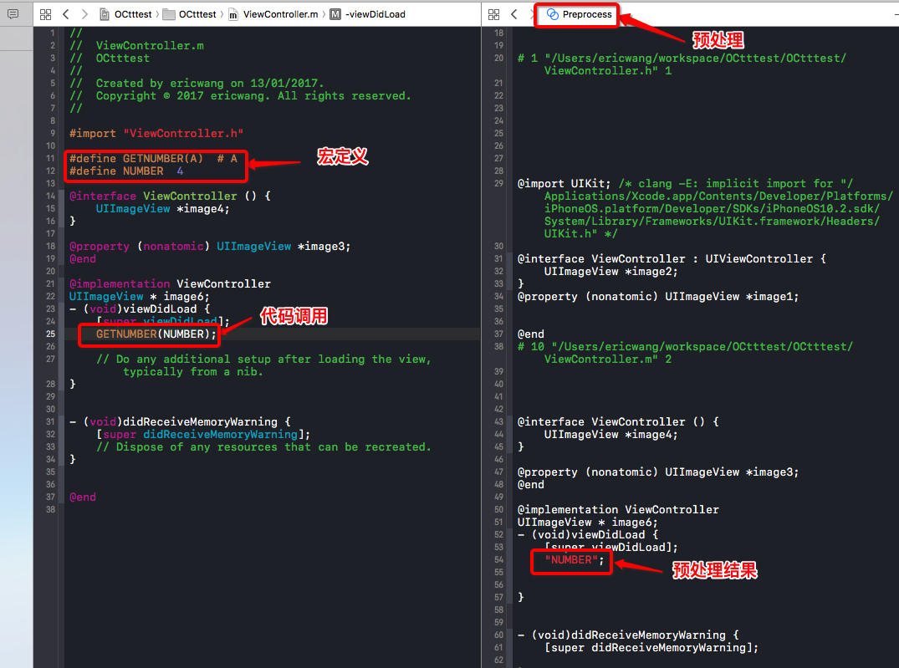
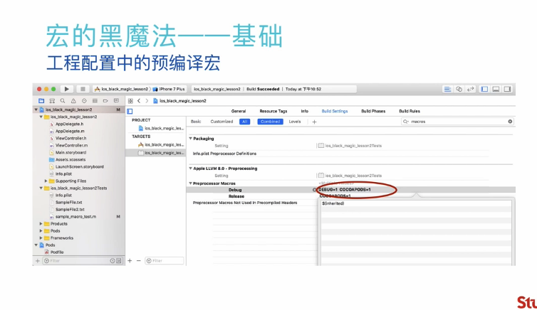
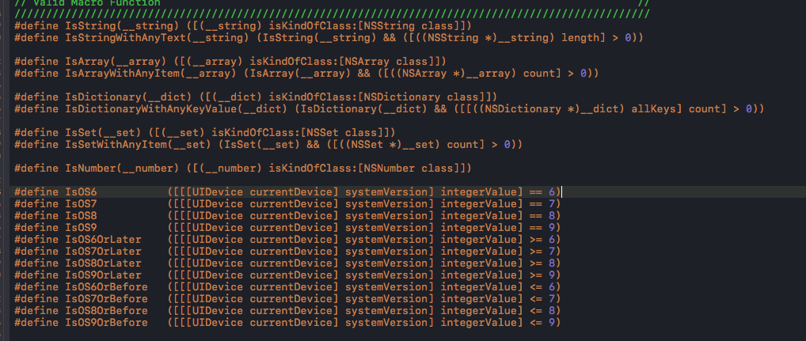

在使用OC开发的项目中，宏是一个绕不开的话题。一个简单易用的宏库能够极大的提高生产力。
介绍
定义
百度百科：
一种批量处理的称谓。它是一种规则或者模式，用于说明 输入如何根据预定义的规则转换为对应的输出。
Wikipedia
一种批量处理的称谓。宏是一种抽象，根据一系列预定义的规则替换一定的文本模式。
在港澳台又被称作 “巨集”
项目中的预定义宏
基本示例
项目中已有的，自定义的宏 都是一些比较基础的 比如
#define DataManager ([SADataManager sharedManager])
#define SA_COLLECT_MODEL_CHANGED @"sa_collect_model"
#define SA_COLLECT_NEWS_CHANGED @"sa_collect_news"
操作符
宏的高级语法(OC中用的不多)
- "#"
- "##"
- "__FILE__" 和 "__LINE__"
- "..." 和 "__VA_ARGS__"
- "##__VA_ARGS"
1....表示可变参数。如例子
#define TOTO(NAME, ...) NAME[__VA_ARGS__]
宏可以接受一个参数列表作为参数。这个参数列表具体的参数可能有很多。
在宏中，这个列表被定义为 ... ， 这个参数列表在展开后 使用 __VA_ARGS__来表示。
2.# 符号表示 把宏的一个参数变为字符串(相当于生成一个带引号的字符串)
具体看下图示例：
#define NUMBER_ONE 1
#define STRINGFY(A) #A
STRINGFY(NUMBER_ONE) #结果是 A 这个例子不对
3.##表示把前后两个宏进行字符串连接
#define DEF_VAR(type, name) type type##_##name
DEF_VAR(int, a) = 5
NSLog(@"%d", int_a)
#define NAME_1 @"William"
#define NAME_2 @"John"
#define NAME_3 @"Hugo"
#define NAME_WITH(i) NAME_##i
NSLog(@"Name is %@", NAME_WITH(1));
#define CONCAT(A, B) A ## B
#define IS_EQ(A,B) CONCAT(_IS_EQ, A)(B)
#define _IS_EQ1(B) 1
#define _IS_EQ2(B) 0
#define _IS_EQ3(B) 0
IS_EQ(2,3) #=>
_IS_EQ2(3) #=>
#结果为2
4.__FILE__和__LINE__
__FILE__ 文件全路径
__LINE__ 行号
__DATE__ 预编译时的日期
__TIME__ 预编译时的时间
__TIMESTAMP__ 预编译日期和时间(时间戳)
__FUNCTION__ 当前函数
其中，在swift中2.2之前会使用 __FILE__ . __LINE. __COLUMN__.__FUNCTION__ 在2.2之后被分别更换为#file,#line,#column,#function
5....和__VA_ARGS__
...出现在宏定义的参数中，表示可变参数
__VA_ARGS__则与之相对的，出现在宏的解释（实现）部分，用于表示参数中的可变参数。
6##__VA_ARGS__ 表示在可变参数个数为0时，去除前面的逗号。
#define ABC(format, ...) printf(format, __VA_ARGS__);
上述如果可变参数个数为0，则会出现
ABC("%s") -> printf("%s",);
使用 ##__VA_ARGS__ 可以有效的避免这个问题。
宏体现的三个重要的作用
- 署名
- 宏展开
- 预编译判断
#宏署名的例子
#define M_PI 3.14159265358979323846264338327950288
#宏展开的例子1
#define TRUE_AND_LOG(condition) \
do { \
if(condition) { \
NSLog(@"your condition'"#condition"' is true"); \
} \
} while(0)
TRUE_AND_LOG(1 + 1 == 2);
#宏展开简化代码结构的例子2
#define TYPE_FLAG_LIST(_) \
_(TYPE_A) \
_(TYPE_B) \
_(TYPE_C) \
_(TYPE_D) \
_(TYPE_E) \
_(TYPE_F)
#define ENUM_ELEMENT(FLAG) FLAG,
typedef enum : NSUInteger {
TYPE_FLAG_LIST(ENUM_ELEMENT)
TYPE_TOTAL
} EnumTypeNum;
短路表达式与语法提示
#define KEY_PATH(CLASS, PATH) \
(((void)(NO && ((void)[CLASS new].PATH, NO)), @# PATH))
@implementation SomeClass
+ (NSDictionary *)JSONKeyPathsByPropertyKey {
return @{
KEY_PATH(SomeClass, property1): @"property_1",
KEY_PATH(SomeClass, property2): @"property_2",
KEY_PATH(SomeClass, property3): @"property_3",
};
}
上述单个公式展开后
(((void)(NO && ((void)[SomeClass new].property1, NO)), @"property1")):@"property_1"
[class new].path是编译通过的。因而使用后续会出现语法提示。
NO和任意的布尔型进行判断， 肯定为空。 所以一般后面会屏蔽掉。
逗号表达式：从左到右计算每一个表达式的值。
逗号运算符总表达式的值为最后一个数。
整个方法的目的是：1.语法提示
2.防止使用字符串的时候，输入错误。
预编译判断的例子
#define ARG_AT(INDEX, ...) _ARG_AT##INDEX(__VA_ARGS__)
#define _ARG_AT0(_0, ...) _0
#define _ARG_AT1(_0, _1, ...) _1
#define _ARG_AT2(_0, _1, _2, ...) _2
#define _ARG_AT3(_0, _1, _2, _3, ...) _3
#define _ARG_AT4(_0, _1, _2, _3, _4, ...) _4
#define _ARG_AT5(_0, _1, _2, _3, _4, _5, ...) _5
int value = ARG_AT(3, 100, 200 ,300, 400) #实际调用
#静态判断 IF(判断条件)(为真时候的表达式)(为假时候的表达式)
#define IF(CONDITION) _CONCAT(_IF, CONDITION)
#define _CONSUME(...)
#define _expand(...) __VA_ARGS__
#define _IF1(...) __VA_ARGS__ _CONSUME
#define _IF0(...) _EXPEND
宏 静态处理的缺陷：
无法处理动态变量。
举例：比如 处理 IF(a) 这样的情况，由于a是动态变量，在进行展开后得到 _IFa 然后就无法处理了。
c语言的预制宏(只能在OC中使用)
对于Xcode，预处理或者预编译阶段是可以直接查看的

注意：
1. 不同阶段的Preprocessed可能不同，要根据你的目标去选择预处理的条件。
2.宏经过预编译后出来的代码，可以检测宏写的是否正确，但是无法看到宏被展开的过程。
ReactiveCocoa中的元宏（例子）
作者定义了一些基础的宏，成为“元宏”，它们是构成之后复杂宏的基础。
1.metamacro_stringify(VALUE)
#define metamacro_stringify(VALUE) \
metamacro_stringify_(VALUE)
#define metamacro_stringify_(VALUE) # VALUE
表示把宏的参数转换为字符串。
2.metamacro_concat(A,B)
#define metamacro_concat(A,B) \
metamacro_concat_(A,B)
#define metamacro_concat_(A, B) A ## B
合并A，B参数到一起。
3.metamacro_argcount(...)和 metamacro_at(N, ...)
获取参数个数 获取参数第N个元素
#define metamacro_argcount(...) \
metamacro_at(20, __VA_ARGS__, 20, 19, 18, 17, 16, 15, 14, 13, 12, 11, 10, 9, 8, 7, 6, 5, 4, 3, 2, 1)
注意：在预编译阶段处理，而非在运行时获取。
#define metamacro_at(N, ...) \
metamacro_concat(metamacro_at, N)(__VA_ARGS__)
继续展开，得到
#define metamacro_at(N, ...) \
metamacro_atN(__VA_ARGS__)
继续
#define metamacro_at0(...) metamacro_head(__VA_ARGS__)
#define metamacro_at1(_0, ...) metamacro_head(__VA_ARGS__)
#define metamacro_at2(_0, _1, ...) metamacro_head(__VA_ARGS__)
#define metamacro_at3(_0, _1, _2, ...) metamacro_head(__VA_ARGS__)
#define metamacro_at4(_0, _1, _2, _3, ...) metamacro_head(__VA_ARGS__)
#define metamacro_at5(_0, _1, _2, _3, _4, ...) metamacro_head(__VA_ARGS__)
#define metamacro_at6(_0, _1, _2, _3, _4, _5, ...) metamacro_head(__VA_ARGS__)
#define metamacro_at7(_0, _1, _2, _3, _4, _5, _6, ...) metamacro_head(__VA_ARGS__)
#define metamacro_at8(_0, _1, _2, _3, _4, _5, _6, _7, ...) metamacro_head(__VA_ARGS__)
#define metamacro_at9(_0, _1, _2, _3, _4, _5, _6, _7, _8, ...) metamacro_head(__VA_ARGS__)
#define metamacro_at10(_0, _1, _2, _3, _4, _5, _6, _7, _8, _9, ...) metamacro_head(__VA_ARGS__)
#define metamacro_at11(_0, _1, _2, _3, _4, _5, _6, _7, _8, _9, _10, ...) metamacro_head(__VA_ARGS__)
#define metamacro_at12(_0, _1, _2, _3, _4, _5, _6, _7, _8, _9, _10, _11, ...) metamacro_head(__VA_ARGS__)
#define metamacro_at13(_0, _1, _2, _3, _4, _5, _6, _7, _8, _9, _10, _11, _12, ...) metamacro_head(__VA_ARGS__)
#define metamacro_at14(_0, _1, _2, _3, _4, _5, _6, _7, _8, _9, _10, _11, _12, _13, ...) metamacro_head(__VA_ARGS__)
#define metamacro_at15(_0, _1, _2, _3, _4, _5, _6, _7, _8, _9, _10, _11, _12, _13, _14, ...) metamacro_head(__VA_ARGS__)
#define metamacro_at16(_0, _1, _2, _3, _4, _5, _6, _7, _8, _9, _10, _11, _12, _13, _14, _15, ...) metamacro_head(__VA_ARGS__)
#define metamacro_at17(_0, _1, _2, _3, _4, _5, _6, _7, _8, _9, _10, _11, _12, _13, _14, _15, _16, ...) metamacro_head(__VA_ARGS__)
#define metamacro_at18(_0, _1, _2, _3, _4, _5, _6, _7, _8, _9, _10, _11, _12, _13, _14, _15, _16, _17, ...) metamacro_head(__VA_ARGS__)
#define metamacro_at19(_0, _1, _2, _3, _4, _5, _6, _7, _8, _9, _10, _11, _12, _13, _14, _15, _16, _17, _18, ...) metamacro_head(__VA_ARGS__)
#define metamacro_at20(_0, _1, _2, _3, _4, _5, _6, _7, _8, _9, _10, _11, _12, _13, _14, _15, _16, _17, _18, _19, ...) metamacro_head(__VA_ARGS__)
可见 N的取值只能从 0 到 20。
#define metamacro_head(...) \
metamacro_head_(__VA_ARGS__, 0)
#define metamacro_head_(FIRST, ...) FIRST
逻辑上来说，一个简单的变体如下
define metamacro_head(FIRST, ..., 0) FIRST
可知，这是用于获取后面可变入参的第一个参数。
对于 metamacro_at(N, ...)
因而，metamacro_argcount(...)
#define metamacro_argcount(...) \
metamacro_at20(__VA_ARGS__, 20, 19, 18, 17, 16, 15, 14, 13, 12, 11, 10, 9, 8, 7, 6, 5, 4, 3, 2, 1)
- metamacro_head(...)
#define metamacro_head(...) \
metamacro_head_(_VA_ARGS_, 0)
#define metamacro_head_(FIRST, ...) FIRST
作用：取出可变参数列表的第一个参数
- metamacro_tail(...)
#define metamacro_tail(...) \
metamacro_tail_(__VA_ARGS__)
#define metamacro_tail_(FIRST, ...) __VA_ARGS__
作用 取出可变参数列表除去第一个参数以外的所有参数。
限制条件： 可变参数中至少有两个参数。
metamacro_take(N, ...)
#define metamacro_take(N, ...) metamacro_concat(metamacro_take, N)(__VA_ARGS__)函数会展开为
metamacro_takeN(__VA_ARGS__)
#define metamacro_take0(...)
#define metamacro_take1(...) metamacro_head(__VA_ARGS__)
#define metamacro_take2(...) metamacro_head(__VA_ARGS__), metamacro_take1(metamacro_tail(__VA_ARGS__))
#define metamacro_take3(...) metamacro_head(__VA_ARGS__), metamacro_take2(metamacro_tail(__VA_ARGS__))
#define metamacro_take4(...) metamacro_head(__VA_ARGS__), metamacro_take3(metamacro_tail(__VA_ARGS__))
#define metamacro_take5(...) metamacro_head(__VA_ARGS__), metamacro_take4(metamacro_tail(__VA_ARGS__))
#define metamacro_take6(...) metamacro_head(__VA_ARGS__), metamacro_take5(metamacro_tail(__VA_ARGS__))
#define metamacro_take7(...) metamacro_head(__VA_ARGS__), metamacro_take6(metamacro_tail(__VA_ARGS__))
#define metamacro_take8(...) metamacro_head(__VA_ARGS__), metamacro_take7(metamacro_tail(__VA_ARGS__))
#define metamacro_take9(...) metamacro_head(__VA_ARGS__), metamacro_take8(metamacro_tail(__VA_ARGS__))
#define metamacro_take10(...) metamacro_head(__VA_ARGS__), metamacro_take9(metamacro_tail(__VA_ARGS__))
#define metamacro_take11(...) metamacro_head(__VA_ARGS__), metamacro_take10(metamacro_tail(__VA_ARGS__))
#define metamacro_take12(...) metamacro_head(__VA_ARGS__), metamacro_take11(metamacro_tail(__VA_ARGS__))
#define metamacro_take13(...) metamacro_head(__VA_ARGS__), metamacro_take12(metamacro_tail(__VA_ARGS__))
#define metamacro_take14(...) metamacro_head(__VA_ARGS__), metamacro_take13(metamacro_tail(__VA_ARGS__))
#define metamacro_take15(...) metamacro_head(__VA_ARGS__), metamacro_take14(metamacro_tail(__VA_ARGS__))
#define metamacro_take16(...) metamacro_head(__VA_ARGS__), metamacro_take15(metamacro_tail(__VA_ARGS__))
#define metamacro_take17(...) metamacro_head(__VA_ARGS__), metamacro_take16(metamacro_tail(__VA_ARGS__))
#define metamacro_take18(...) metamacro_head(__VA_ARGS__), metamacro_take17(metamacro_tail(__VA_ARGS__))
#define metamacro_take19(...) metamacro_head(__VA_ARGS__), metamacro_take18(metamacro_tail(__VA_ARGS__))
#define metamacro_take20(...) metamacro_head(__VA_ARGS__), metamacro_take19(metamacro_tail(__VA_ARGS__))
使用递归的思想，每次取完头之后，剩下的队列就是此次的tail。然后再递归取下次的head。
metamacro_take(N, ...)的作用就是取出可变参数的前N个数，并把它们组合成新的参数列表。
- metamacro_drop(N, ...)
#define metamacro_drop(N, ...)
metamacro_concat(metamacro_drop, N)(__VA_ARGS__)
展开
metamacro_dropN(__VA_ARGS__)
继续展开
#define metamacro_drop0(...) __VA_ARGS__
#define metamacro_drop1(...) metamacro_tail(__VA_ARGS__)
#define metamacro_drop2(...) metamacro_drop1(metamacro_tail(__VA_ARGS__))
#define metamacro_drop3(...) metamacro_drop2(metamacro_tail(__VA_ARGS__))
#define metamacro_drop4(...) metamacro_drop3(metamacro_tail(__VA_ARGS__))
#define metamacro_drop5(...) metamacro_drop4(metamacro_tail(__VA_ARGS__))
#define metamacro_drop6(...) metamacro_drop5(metamacro_tail(__VA_ARGS__))
#define metamacro_drop7(...) metamacro_drop6(metamacro_tail(__VA_ARGS__))
#define metamacro_drop8(...) metamacro_drop7(metamacro_tail(__VA_ARGS__))
#define metamacro_drop9(...) metamacro_drop8(metamacro_tail(__VA_ARGS__))
#define metamacro_drop10(...) metamacro_drop9(metamacro_tail(__VA_ARGS__))
#define metamacro_drop11(...) metamacro_drop10(metamacro_tail(__VA_ARGS__))
#define metamacro_drop12(...) metamacro_drop11(metamacro_tail(__VA_ARGS__))
#define metamacro_drop13(...) metamacro_drop12(metamacro_tail(__VA_ARGS__))
#define metamacro_drop14(...) metamacro_drop13(metamacro_tail(__VA_ARGS__))
#define metamacro_drop15(...) metamacro_drop14(metamacro_tail(__VA_ARGS__))
#define metamacro_drop16(...) metamacro_drop15(metamacro_tail(__VA_ARGS__))
#define metamacro_drop17(...) metamacro_drop16(metamacro_tail(__VA_ARGS__))
#define metamacro_drop18(...) metamacro_drop17(metamacro_tail(__VA_ARGS__))
#define metamacro_drop19(...) metamacro_drop18(metamacro_tail(__VA_ARGS__))
#define metamacro_drop20(...) metamacro_drop19(metamacro_tail(__VA_ARGS__))
metamacro_drop(N, ...)丢掉当前参数列表里的前N位参数
注意事项
1.宏中常出现的do{ }while(0)；
2.对于出现的问题，通常很多方法 比如
#define concat(A, B) concat_(A,B)
#define concat_(A,B) A ## B
对于一个函数的调用，复合嵌套了一层， 有什么必要性？如果没有这一层会怎么样？
单纯的一个连接操作，非要加到concat函数里面，有什么必要性？如果没有concat函数，直接使用会怎么样？
3.
了解宏的必要性
1.工程配置中，会有一些 预编译宏 ，进行自己一些想要的设定
不同的环境，不同的sdk(模拟器、真机)
这里仅需要进行测试

宏的优缺点：
| 优点 | 缺点 |
|---|---|
| 不扩大二进制体积 | 晦涩难懂 |
| 不占用运行时 | 功能严重受限 |
| 代码简洁 | 排错困难 |
| 深入理解预处理过程 | 其它语言几乎无法借鉴 |
启发：
* 已用现有的能力拓展不存在的能力
* 受限的功能匹配受限的需求（比如说 个数受限 等等）
* 分段分析，推演的能力
* 冷知识
参考目录
百度百科
wikipedia
ReactiveCocoa 中 奇妙无比的“宏”魔法 介绍了常用的基本例子
宏定义的黑魔法 - 宏菜鸟起飞手册
老版本SohuAuto的例子
